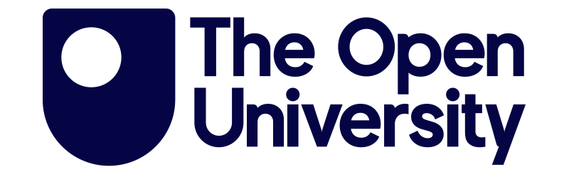
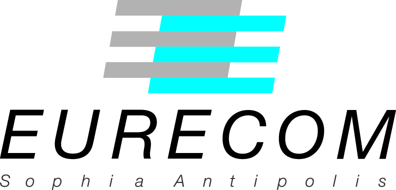
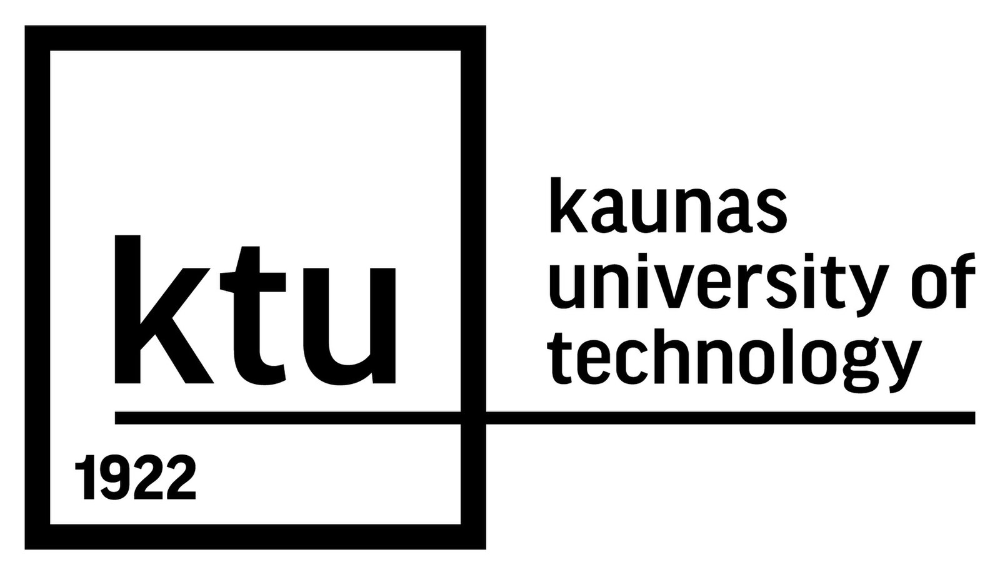

Project partners
The Open University (OU) / Knowledge Media institute (KMi)

KMi consists of over 60 researchers and has been involved in a large number of EU and national projects. KMi has a long history of researching and developing social software, online community analytic tools and algorithms. The KMi team has extensive experience in social media analysis, semantic web, open science, online harms, misinformation analysis, and web science.
The OU is the coordinator of the project and also lead the design and development of ClimateSense platform. The OU is also involved in creating prediction models and contribute to the ClimateSense data with its GIS-KG expertise.
EURECOM / Data Science Department

EURECOM is a private and non-profit research centre and graduate school specialised in Digital Sciences located in the Sophia Antipolis Technopole in the South of France. The Data Science Department at EURECOM has approximately 40 researchers with a research focus on machine learning, deep learning and statistical modelling, distributed and data management systems, information extraction, knowledge based technologies and recommender systems with a strong focus on creative industries, media and cultural heritage data processing.
EURECOM will leads the development of the project knowledge graph. EURECOM also contributes to the project machine learning models given its experience in geospatial semantics.
Prague University of Economics and Business (VSE) / Faculty of Informatics and Statistics (FIS)
FIS is recognized for its research in data-related disciplines, including data science, statistics and econometrics, and in knowledge technologies. The faculty has been involved in many EU and national research projects, primarily in (economic and other) data science, semantic web and (multi)media.
VSE is responsible for the project geostatistical analyses, and contributes to the design and usage of misinformation and climate knowledge graphs and the evaluation of the ClimateSense platform.
Kaunas University of Technology (KTU) / Civil Society and Sustainability Research Group

KTU stands as one of the largest universities in the Baltic States, renowned for its academic excellence and innovative research. With nine faculties and research institutes, KTU offers a comprehensive range of undergraduate and postgraduate programs, enrolling approximately 9,000 students and employing over 1,000 academic staff. The research group Civil Society and Sustainability is a testament to KTU’s dedication to addressing societal and environmental challenges. This group’s research spans several critical areas, including civil society, environmental and societal impacts of technological advancements, and sustainable human development. Their interdisciplinary approach and methodologically sound research will be instrumental in exploring and providing solutions to threats and challenges for a sustainable and secure civil society.
The KTU team plays a significant role in the project’s interdisciplinarity and the development of solutions that promote climate adaptation and resilience. Their work in understanding and integrating social dynamics into technological development ensures that the technological solutions are more likely to be embraced by the stakeholders they are intended to serve. This alignment of technology with societal needs and participatory approaches is key to fostering sustainable and resilient communities in the face of evolving climate challenges.